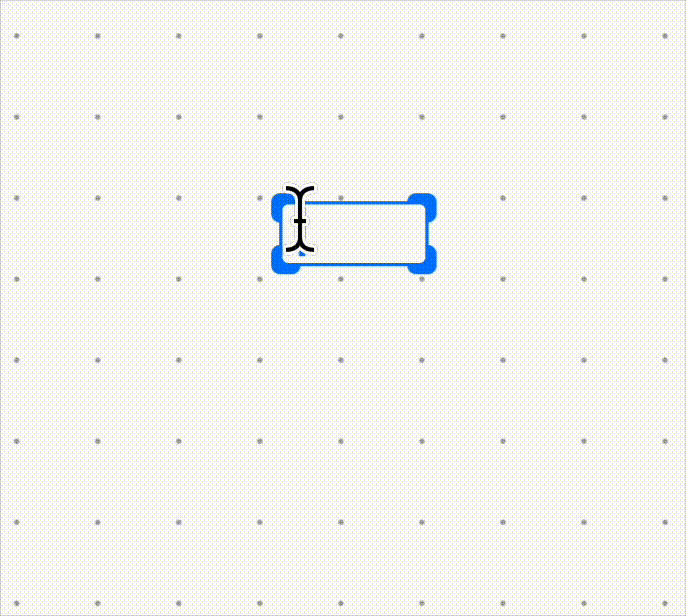
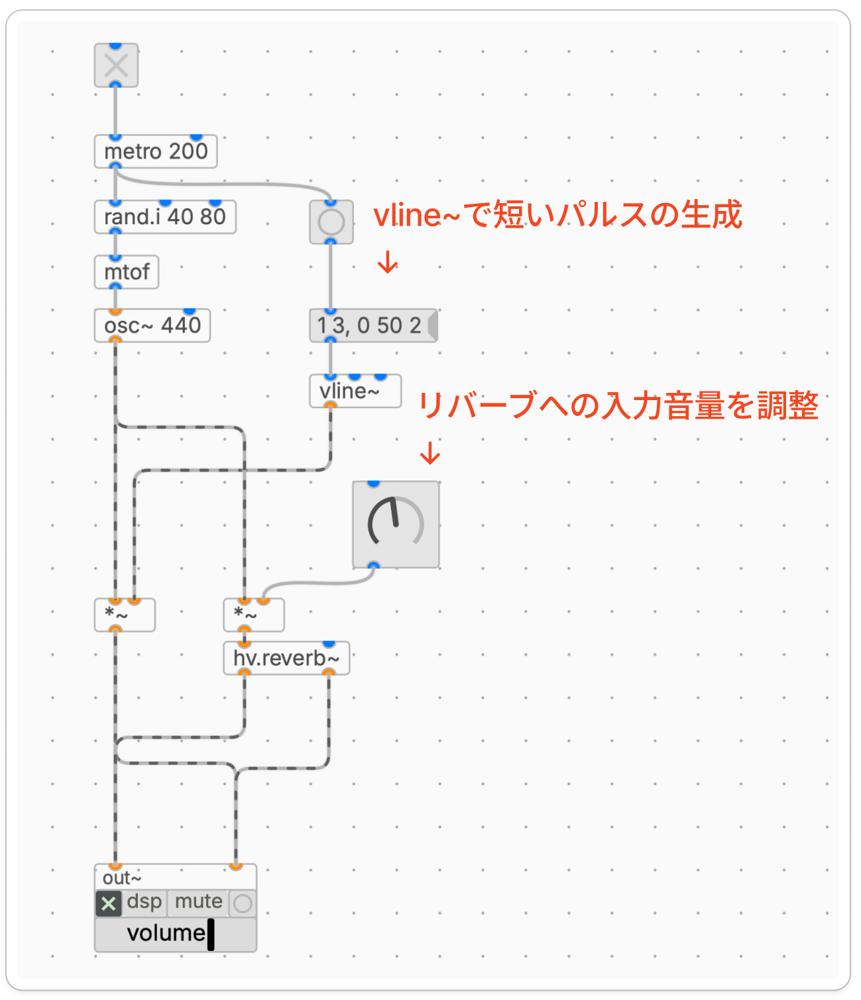
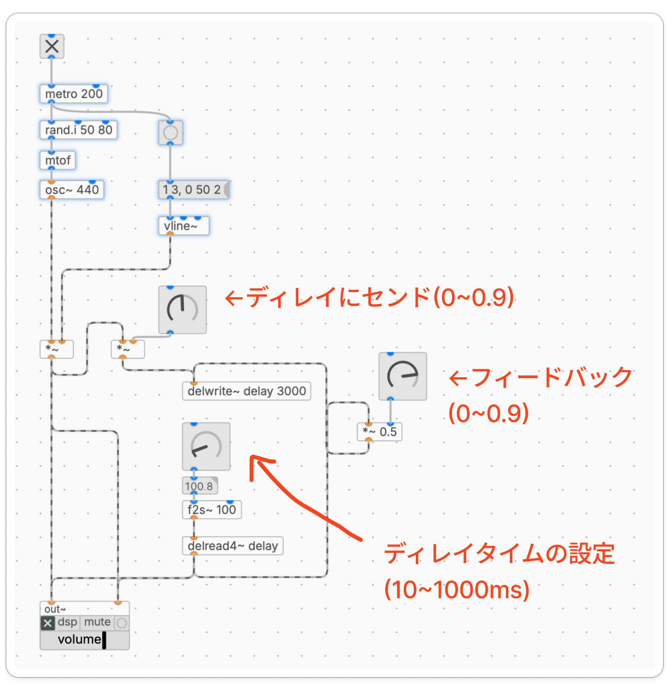
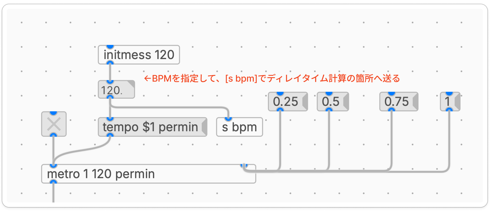
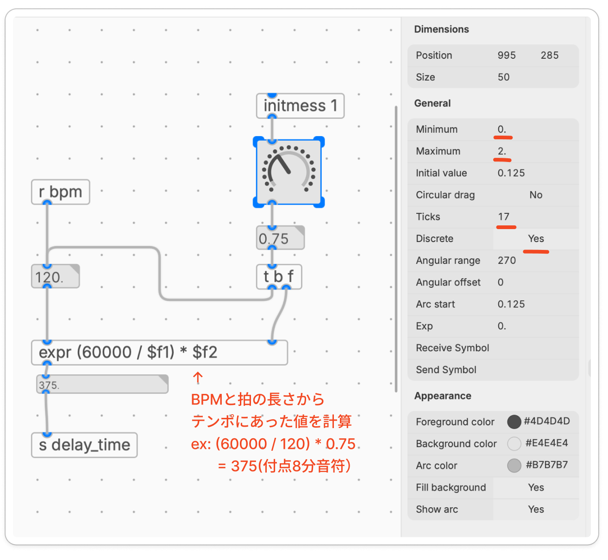
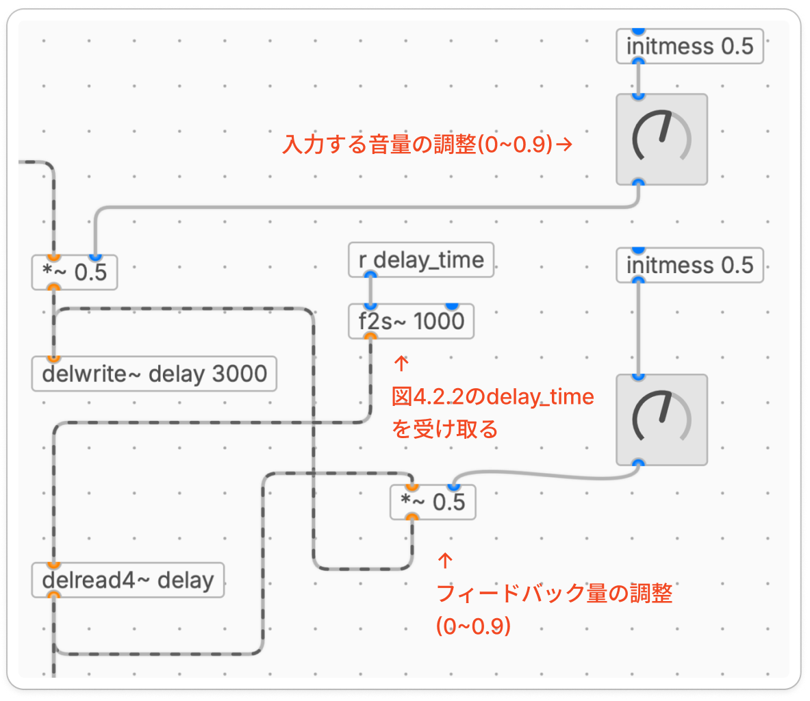

滋賀大学 自主ゼミ「サウンドプログラミング入門」 2026年度 春学期
第5回 サンプルパッチ③（4. シーケンサ + ディレイライン）
第5回では、シーケンサに ディレイ(delay)をかけて、一つのシーケンサーで重奏的な演奏ができるようにアレンジします。
ディレイは、音を遅らせて返すエフェクトです。やまびこのように元の音の後にもう一度音が鳴りますが、音が返ってくるタイミングを シーケンサのテンポに合わせる と、リズムが同期した複雑なパターンが表現できます。たとえば8分音符のシーケンスに付点8分のディレイをかけると、規則的なパターンに心地よいズレが生まれます。
今回行う作業な下記の内容になります。
ディレイの仕組み(delwrite~ / delread4~)を理解する
ディレイタイムとフィードバックを ノブ で操作できるようにする
ディレイタイムを テンポに同期 させ、刻みを豊かにする
ディレイに限らず、エフェクトを使うときの考え方のひとつに センド(send)があります。原音はそのまま鳴らしておき、そこから「エフェクトにどれくらい音を送るか」を別で調整する、という組み方です。
| 用語 | 意味 |
|---|---|
| 原音(dry) | エフェクトに通さず、そのまま出力する元の音 |
| センド(send) | 原音からエフェクトへ送る音量。*~ + knob で調整する |
原音はそのまま出しつつ、*~ に付けた knob でディレイへ送る量(センド)を決める、というのが基本の流れです。センド量を上げるほどディレイが強く聞こえ、0 にすれば原音だけになります。
音のパラメータを操作するUIはいくつか種類があります。これまではスライダー（[hsl]水平スライダー、[vsl]垂直スライダー）を使ってきましが、今回は つまみのUIである[knob]を使います。機能は [hsl] や[vsl]とほぼ同じで、違いは見た目だけ です。空のオブジェクトボックスに knob と入力すると作れます。

図2.2 knobの作成
knobの設定は、右クリック→Properties でInspectorが開くので、そこで設定することで調整が可能です。主に設定するプロパティは下記のようなものです。基本的には最大値と最小値、初期値になります。
| プロパティ | 設定内容 |
|---|---|
| Minimun | 最小値 |
| Maximun | 最大値 |
| Initial Value | 初期値 |
| Circular Drag | Noで上下操作、Yes で円を描くような回転操作 |
| Steps | 周りに表示する目盛り（例：5にすると5等分の箇所にドットが表示される） |
| Discrete | Yesにすると、値を段階的に変化させる操作に（※Ticksの目盛り数やRangeの範囲に合わせてステップ数を設計する際に使用） |
| Angular range | ノブを回せる最大の角度を設定（デフォルト：270度） |
Knobを使った簡易的なセンドのデモパッチで動きを確認してみましょう。前回応用として[hv.reverb~]におくる原音の量を[hsl]で調整するパッチを紹介しましたが、これと同じように[knob]を[*~]に接続することでエフェクトに送る音量を調整できます。[knob]のデフォルトの最大値最小値は0~127なので、プロパティで0~1に設定を変更しておきます。
今回のパッチでは、[metro 200]が200msごとにバングを出し、ノートナンバーの決定と音を再生するトリガーとして利用します。音を再生するトリガーは前回[envgen~]を使っていましたが、ここでは[vline~]というオブジェクトでパルス的な信号を出して音量を調整しています。メッセージ1 3, 0 50 2を[vline~]に送ることで、拍ごとに音量エンベロープ(パッと立ち上がってすぐ減衰する打楽器的な形)を作っています。[vline~]のメッセージは「目標値 所要時間 開始遅延」を1組として読み、カンマで区切ると区間をつなげられます。1 3, 0 50 2とすることで、まず3msかけて音量1まで立ち上がり、続いて(メッセージ受信から2ms後に)50msかけて0まで下がる、という2段階の動きになります。この[vline~]のエンベロープを左の[*~]で[osc~]に掛けることで、200msごとに鳴る短い音ができあがります。
[osc~]の原音はそのまま[out~]に送って鳴らしつつ、同じ音を別の[*~]にも分岐させ、[knob]でエフェクトへ送る量(センド)を調整してから[hv.reverb~]に通します。knobを上げるほどリバーブのかかった成分が足されて聞こえ、0にすれば原音だけになります。

図2.3 knobを使ったセンド・リバーブの制御
ディレイを作るには、入ってきた音をいったん メモリに保存 し、しばらくしてから取り出す 仕組みが必要です。この、音を保存して出し入れする仕組み全体を ディレイライン(delay line)と呼びます。
plugdata では、次の2つのオブジェクトを組み合わせて作ります。
| オブジェクト | 機能 |
|---|---|
[delwrite~ 名前 最大時間ms] | 入力シグナルを メモリに書き込む |
[delread4~ 名前] | メモリから 遅らせて読み出す(4点補間つき) |
書き込み(delwrite~)と読み出し(delread4~)が 別のオブジェクト に分かれているのが特徴です。[delwrite~] で付けた「名前」は、そのパッチ内で他の delwrite~ と重複しない固有のもの（ユニークな名前）にする必要があります．
メモリから音を読み出すオブジェクトには [delread~] と [delread4~] があり、前者は時間を固定して使うのに対し、後者は4点補間つきで読み出す（音が途切れないように前後の波形を補正する処理）ため、ノブなどでディレイタイムをリアルタイムに動かしてもクリックノイズが出ず滑らかに変化するのが特徴です。
セクション2で作った「原音 + [*~]+knob でエフェクトへ送る」構成を、そのままディレイに応用します。今回はモノラル音源なので、ステレオ用に[delwrite~]/[delread4~]を2本用意する必要はなく、1本のディレイラインで組みます。まず完成形のパッチを見てから、各部分を順番に追っていきましょう。

図3 シンプルなディレイの全体像
ディレイには、おもに3つのパラメータがあります。
| パラメータ | 意味 |
|---|---|
| ディレイタイム(delay time) | 何ミリ秒遅らせるか |
| フィードバック(feedback) | 遅らせた音をどれくらい戻すか(0〜1) |
| センド量(send) | 原音からディレイへ送る音量 |
このパッチではセクション2と同じく、原音はそのまま出しつつ[*~]+knobでディレイへ送る量(センド)を調整する形にしています。
ディレイの役割を担うのは[delwrite~]と[delread4~]のペアです。
[delwrite~ delay 3000]は 出力を持たない オブジェクトで、入力された音をdelayという名前のバッファ(音を一時的にためておく領域)に書き込むだけです。引数の3000は、そのバッファに確保する 最大遅延時間(ms) です。
[delread4~ delay]は、同じ名前のバッファから 指定した時間だけ遅れた音を取り出します。ディレイタイムは シグナルで指定 する点がポイントで、固定なら[sig~ 300](数値をシグナルに変換)を繋げば300ms遅れた音が得られます。このパッチではそこをknobで動かしています。
[delread4~]で取り出した音を もう一度[delwrite~]に戻す と、遅れた音がさらに遅らされて何度も繰り返します。これが フィードバック(feedback)です。繰り返しが重なることで、響きが厚く豊かになります。
戻す量は[*~ 0.5](右のknob=フィードバック量)で決めます。plugdataでは 同じインレットに繋いだシグナルは自動で足される ので、センドされてきた原音とフィードバックの音を、両方とも[delwrite~]に繋ぐだけで混ざります。
⚠️係数を 1に近づけるほど長く尾を引き、1を超えると発振 して音がどんどん大きくなってしまうので、上限は0.9程度(安全に始めるなら0.8以下)にしておきます。
ディレイタイムを[knob]で動かしたくなりますが、[knob]が出すのは 数値(float) です。これを[delread4~]のシグナルインレットに直接繋ぐと、ツマミを回すたびにディレイタイムが カクッと飛んでクリックノイズ が出ます。そこで、数値をなめらかなシグナルに変える [f2s~](float to signal)を間に挟みます。[f2s~ 100]のように引数を書くと、100msかけて新しい値へなめらかに移行 します。
補足:
[delread~](4が付かない方)は補間がないため、ディレイタイムを動かすと激しいノイズが出ます。動かすディレイには必ず[delread4~]を使います。
ツマミに向くのは、連続的に変化させる値 です。このパッチでは次の3つをノブにしています。
| ノブ | 範囲 | つなぎ先 |
|---|---|---|
| Send | 0〜0.9 | センドの[*~](→ [delwrite~]) |
| Feedback | 0〜0.9 | フィードバックの[*~]係数 |
| Time | 10〜1000 ms | [f2s~] → [delread4~] |
ディレイタイムを シーケンサのテンポに同期 させると、繰り返しが拍にそろって刻みがはまります。ここでは、ディレイタイムを「○○ms」ではなく 8分音符ぶん・16分音符ぶん のように 音価 で決められるようにします。
テンポ(BPM)から、4分音符1拍の長さは次の式で求まります。
4分音符のディレイタイム[ms] = 60000 / BPM
たとえば BPM 120 なら 60000 / 120 = 500ms です。あとは音価に応じた 倍率 を掛ければ、その音価ぶんのディレイタイムになります。8分音符なら×0.5、16分音符なら×0.25、といった具合です。
ディレイタイム[ms] = (60000 / BPM) × 倍率
このパッチでは、その倍率を 段階的な knob で選べるようにしています。knob の範囲は 0〜2、17段階(0.125きざみ)に設定してあり、0, 0.125, 0.25, 0.375 … 2.0 の値が出ます。この値をそのまま倍率として使うので、knob を回すと音価が切り替わります。おもな値と音符の対応は次のとおりです。
| knob値(倍率) | 音符 | BPM 120 での長さ |
|---|---|---|
| 0.125 | 32分音符 | 62.5 ms |
| 0.25 | 16分音符 | 125 ms |
| 0.375 | 付点16分音符 | 187.5 ms |
| 0.5 | 8分音符 | 250 ms |
| 0.75 | 付点8分音符 | 375 ms |
| 1.0 | 4分音符 | 500 ms |
| 1.5 | 付点4分音符 | 750 ms |
| 2.0 | 2分音符 | 1000 ms |
付点8分(×0.75)は8分の刻みに対して少しずつズレながら絡むので、推進力を出したいときの定番です。8分(×0.5)はもっとも素直に刻みが倍に感じられます。
17段階のうち、上の表に載っていない値(0.625・0.875 など)は標準的な音符には対応しませんが、あえて拍からずらした効果を狙うときには使えます。逆に、3連系(×1/3・×2/3)は0.125きざみの目盛りには乗らないので、3連を使いたい場合は knob のきざみ方を変える必要があります。
計算は[expr (60000 / $f1) * $f2]でおこないます。$f1が BPM、$f2が音価の倍率です。
BPM は、シーケンサ側と 同じ値 を使うのがポイントです。シーケンサのテンポ用の数値を[s bpm]で送っておき、ディレイ側は[r bpm]で受け取ります([s]/[r]は、線を引かずに同じ名前どうしをつなぐワイヤレス接続です)。これでテンポを変えると、シーケンサとディレイが一緒に追従します。
倍率の knob は、回すたびに値が[t b f]で分岐します。まず値そのものを[expr]の右インレット($f2)にセットし、続いて bang で直前の BPM を左インレットに送り直して計算をやり直させます。こうすることで、knob を回した瞬間に新しいディレイタイムが再計算されます。
計算結果(ms)は[s delay_time]で送り、遅延ライン側の[r delay_time]で受け取って[f2s~ 1000]→[delread4~ delay]につなぎます。ここの[f2s~]の引数が1000と長めなので、knob で音価を切り替えたときに、ディレイタイムが1秒かけてゆっくり移り変わり、テープを引き伸ばすような音程変化がはっきり出ます。素早く切り替えたいときは、この値を小さくします。

図4.2.1 BPMの設定と値の送信

図4.2.2 BPMに対応したknobの設定とexprによる計算

図4.2.3 delayの機構。入力音量、フィードバックする音量、ディレイタイムを制御
補足:
[playhead]というオブジェクトを使うと、DAW 上で動かしたときに DAW のテンポを自動取得 できます。スタンドアロンで使うときは、上のようにシーケンサのテンポを[s bpm]/[r bpm]で分ければ十分です。プラグインの導入の回で利用方法を説明する予定です。
ディレイライン：[delwrite~] で書き込み、[delread4~](4点補間)で読み出す
フィードバック：出力を [delwrite~] に戻すと繰り返しになる。係数は1未満(0.8程度を上限に)
ディレイタイムを動かすときは [knob] → [f2s~] → [delread4~]。[f2s~] でなめらかにしてクリックを防ぐ
ノブにするのは Time・Feedback・Mix。
テンポ同期 が今回の核心。60000 / BPM に音価の比率を掛けて、シーケンサと同じテンポに合わせると、刻みが拍に乗って豊かになる